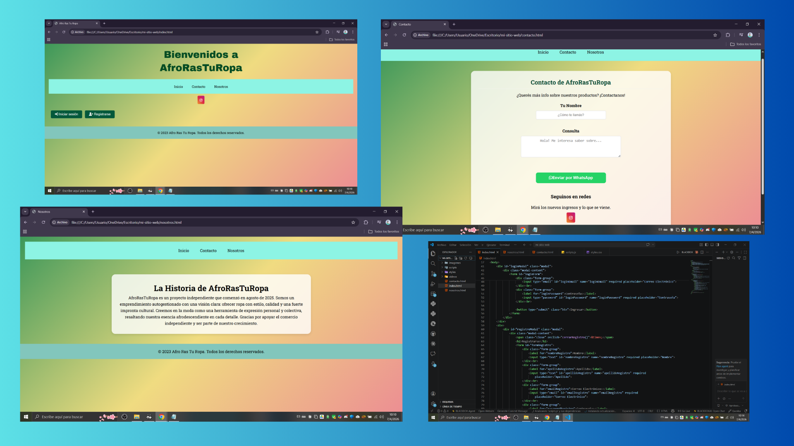
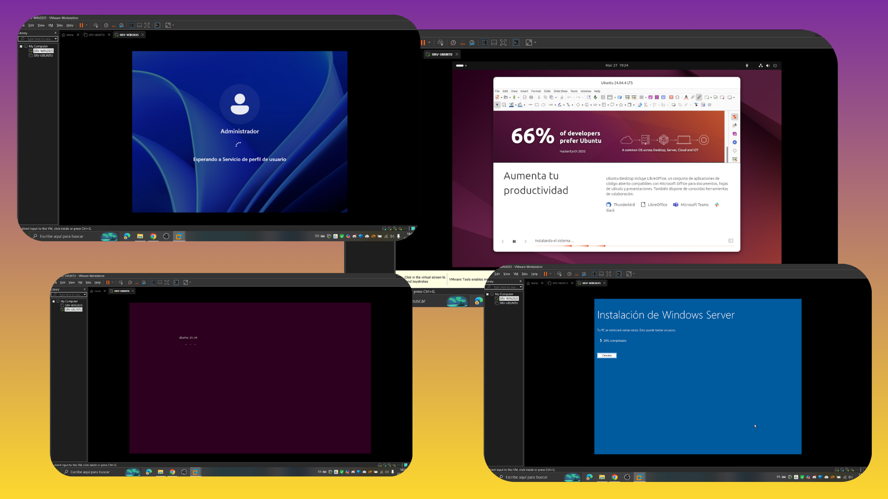

Gabriela Virginia Morán Chans
Analista de Sistemas Junior
Mi camino en el mundo de la tecnología comenzó con una curiosidad profunda por entender cómo funcionan los sistemas que sostienen nuestro día a día. Actualmente, como estudiante de la Tecnicatura en Análisis de Sistemas, he transformado esa curiosidad en una metodología de trabajo: analizar problemas complejos para diseñar soluciones eficientes y escalables. A lo largo de mi formación, he pasado de la lógica pura y el modelado de datos a la implementación real de interfaces. Mi enfoque no es solo escribir código, sino comprender el flujo de la información y la experiencia del usuario. Este portfolio es el resultado de ese proceso: una combinación de rigor analítico y desarrollo constante, donde cada proyecto refleja un nuevo desafío superado y una herramienta técnica dominada
Contactame
Experiencia Laboral
Implementadora de Sistemas.
Empresa: DGSISAN - Dirección General de Sistemas Sanitarios.
- Capacitación a personal médico y administrativo de hospitales públicos.
- Organización y control de información administrativa en Excel.
- Elaboración, revisión de documentación y guía de uso.
- Resolución de consultas y soporte a usuarios.
- Coordinación con distintas áreas para asegurar la correcta gestión de información.
Atención al Cliente / Call Center.
Empresa: MyP Producciones Marketing S.R.L
- Gestión de consultas administrativas y seguimiento de solicitudes.
- Registro y actualización de datos en sistemas de gestión (CRM).
- Organización de información y priorización de casos.
- Comunicación con distintas áreas para resolución de incidencias.
Trayectoria y Superación Personal.
Empresa: UADEL S.R.L - Empleada de Servicios Generales
- Experiencia en instituciones públicas (PAMI, Correo Argentino, CNRT).
- Personal de servicios críticos en sector hotelero durante la pandemia.
Esta etapa de 10 años forjó mi disciplina y fue el punto de partida para mi reconversión profesional hacia el Análisis de Sistemas. Hoy, continúo formándome y superándome día a día para alcanzar mi meta, sin olvidar nunca de dónde vengo, pero con la mirada firme en el camino hacia donde voy.
Proyectos Personales

Prácticas en Postman
En la materia "Desarrollo e implementación de pruebas de software", trabajé en testing de APIs utilizando Postman, validando endpoints de un carrito de compras.
- Envío de requests POST para agregar productos.
- Validación de respuestas HTTP 200 OK.
- Verificación de la estructura del JSON de respuesta.

Prácticas en Cypress
Automatización de pruebas E2E utilizando JavaScript en Visual Studio Code, gestionando casos de prueba en Jira.
- Validación de generación de orden de compra.
- Navegación por categorías y gestión de favoritos.
- Limpieza y verificación de cambios en el carrito.

Proyecto de Página Web
Desarrollo de una interfaz completa para la materia "Seminario de actualización en Tecnología Web". Utilicé HTML, CSS y JavaScript para crear una experiencia fluida y responsive.
- Diseño de interfaz atractiva y fácil de usar.
- Menú de navegación responsive.
- Validación de formularios con JavaScript.

Mi paso por Redes y Ciberseguridad
Levantando infraestructuras
Esta imagen muestra el proceso de creación de entornos virtuales donde configuré desde
cero Windows Server y Ubuntu. Fue un gran desafío técnico que me ayudó a
entender cómo conviven diferentes sistemas operativos en una misma red y cómo aplicar
medidas de seguridad esenciales desde la instalación inicial.
Estas son las tecnologías y
herramientas utilizadas:
- Hipervisor: Utilización de VMware Workstation para la creación y gestión de múltiples máquinas virtuales en simultáneo.
- Gestión de Imágenes: Manipulación y montaje de imágenes ISO para la instalación limpia de sistemas operativos.
- Sistemas Operativos Desplegados: Windows Server: Configuración inicial y administración de roles de servidor.
- Distribuciones Linux (Ubuntu): Implementación de entornos open-source para pruebas de red.
- Redes Virtuales: Configuración de adaptadores de red (NAT, Bridged y Host-only) para asegurar la comunicación entre los entornos virtualizados y la máquina host.
- Optimización de Recursos: Asignación dinámica de CPU, RAM y almacenamiento virtual para garantizar el rendimiento del laboratorio.